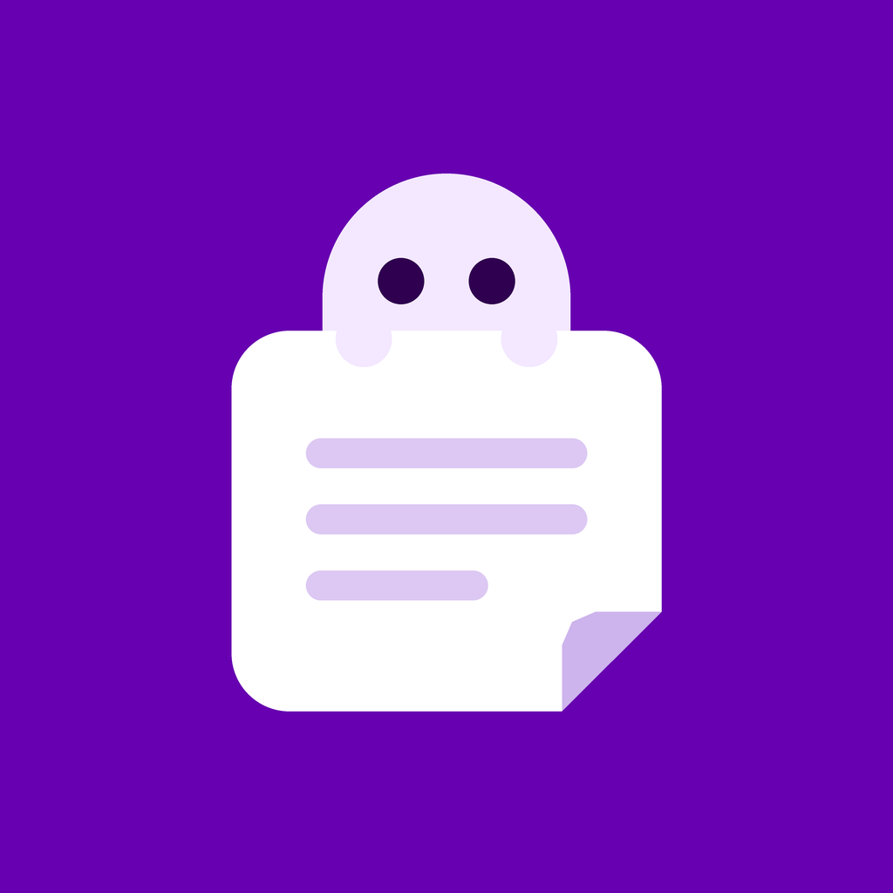

Ghost Notes - Privacy Policy
Last updated: November 18, 2026
In short
- Ghost Notes has no account, no servers, no ads and no analytics. We do not collect, receive or sell any personal data.
- Your notes, to-do lists, links and images are stored only on your device.
- Data leaves the app only when you choose to: sharing, exporting a backup, opening a link, or linking reminders to your calendar.
- Ghost content never leaves the app through reminders, calendar events or home screen widgets.
Data stored on your device
Everything you create in Ghost Notes stays in the app's private storage on your device: notes, to-do lists, saved links, images, attachments, reminders and your settings. This data is not sent to us or to any third party by the app.
If you uninstall the app or clear its data, this content is deleted. Your device's own backup service (for example Android backup) may include app data according to your device settings.
Ghost mode
Content you mark as Ghost is hidden from the normal view and can be protected with your device's lock (fingerprint, face or PIN). Authentication is handled entirely by your device's operating system: Ghost Notes never receives or stores your biometric data or PIN.
While Ghost mode is on, the app can block screenshots and the preview in the recent apps screen. Reminders for Ghost notes show a generic text, and Ghost items can't be placed on home screen widgets or added to your calendar.
Calendar link
Ghost Notes can add the reminders of your notes to your device calendar. The "Link calendar" option is on by default, but nothing is written until you set your first reminder and grant the calendar permission. You can turn it off at any time in Settings.
- For each reminder of a normal note, the app creates an event in your device's default calendar with the note title, the note text, the reminder time and its repeat.
- Ghost notes are never added. Making a note Ghost removes its event.
- Changing or removing a reminder updates or removes its event. Turning the option off removes the events created by the app.
- If your device calendar is synced with an online account, such as a Google account, your calendar provider will receive these events and handle them under its own privacy policy, for example the Google Privacy Policy.
Permissions
The app only asks for a permission when you use the feature that needs it.
| Permission | Used for |
|---|---|
| Camera | Taking photos for the gallery or note attachments, and scanning QR codes of links. |
| Photos and storage | Picking images from your device, saving images to your gallery, and importing or exporting backup files. |
| Notifications and alarms | Showing your reminders at the time you set, and scheduling them again after the device restarts. |
| Calendar | Adding, updating and removing the events of your reminders, only while the calendar link is on. |
| Biometrics | Unlocking Ghost mode with your device's fingerprint, face or PIN. |
| Internet | Opening the links you save. Links open in your browser or in the app that handles them. |
When data leaves the app
Only when you take one of these actions:
- Sharing a note, link or image sends it to the app you pick in the share menu.
- Exporting creates a backup file (named GhostNotesBackup with the date and time) in the location you choose. The file is not encrypted and may include Ghost content if you select it, so keep it somewhere safe.
- Copying places the text on your device clipboard.
- Opening a link loads it in your browser, under that website's own policies.
- Read aloud uses your device's text-to-speech engine. Depending on your device settings, that engine may process text online.
- Home screen widgets show the note or image you place on them on your home screen. Ghost items can't be placed on widgets.
- Calendar link writes reminders to your device calendar, as described above.
Google Play
If you installed Ghost Notes from Google Play, Google Play collects some data on its own, for example for installs, updates and crash reports. See the Google Privacy Policy.
Children
Ghost Notes does not collect personal data from anyone, including children.
Changes to this policy
If this policy changes, the new version will be published on this page with an updated date.